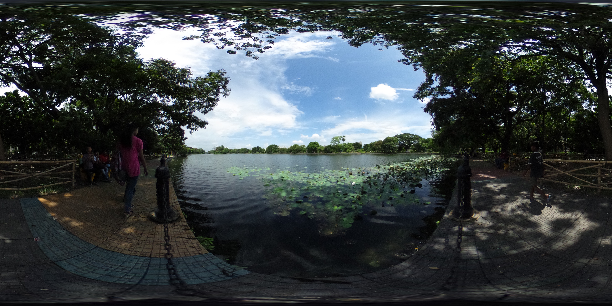

<!doctype html>
<html>
<head>
  <meta charset="utf-8">
  <title>A-Frame demo</title>
  <script src="js/aframe-master.min.js"></script>
</head>
<body>
  <a-scene>
    <a-assets>
      
    <!--
      
      
      
    -->
      <a-asset-item id="airplane-obj" src="https://spnvmori.github.io/webvr/images/airplane/11803_Airplane_v1_l1.obj"></a-asset-item>
      <a-asset-item id="airplane-mtl" src="https://spnvmori.github.io/webvr/images/airplane/11803_Airplane_v1_l1.mtl"></a-asset-item>
      <a-asset-item id="hotel-obj"    src="https://raw.githubusercontent.com/spnvmori/spnvmori.github.io/master/webvr/images/hotel/bina.obj"></a-asset-item>
      <a-asset-item id="hotel-mtl"    src="https://raw.githubusercontent.com/spnvmori/spnvmori.github.io/master/webvr/images/hotel/bina.mtl"></a-asset-item>
   
    </a-assets>
    <a-sky src="https://spnvmori.github.io/webvr/images/sky.jpg" rotation="0 40 0"></a-sky>
    <!--
        <a-link href="index.html" title="My Homepage 002" position="-10 3 -5"></a-link>

        <a-link href="#" title="海外ホテル" position="2 1 -5"></a-link>

        <a-link href="https://google.com" title="My Homepage 003" position="10 1 -5"></a-link>
    -->
        <a-obj-model
          src="#airplane-obj" mtl="#airplane-mtl"
          position="5 5 -5" scale="0.002 0.002 0.002" rotation="-80 -180 0">
        </a-obj-model>
        <a-obj-model
          src="#hotel-obj" mtl="#hotel-mtl"
          position="-6 0.5 -5" scale="0.05 0.05 0.05" rotation="0 0 0">
        </a-obj-model>
  <a-camera id="camera">
    <a-entity cursor="fuse: true; fuseTimeout: 500;"
        position="0 0 -1"
        geometry="primitive: ring; radiusInner: 0.02; radiusOuter: 0.03"
        material="color: blue; shader: flat; opacity: 0;"
        >
        <a-animation begin="click" easing="ease-in" attribute="scale" dur="1500"
           fill="forwards" from="0.1 0.1 0.1" to="1 1 1"></a-animation>
        <a-animation begin="cursor-fusing" easing="ease-in" attribute="scale" dur="1500"
           fill="backwards" from="1 1 1" to="0.1 0.1 0.1"></a-animation>
    </a-entity>
    <a-image src="#cursorImage" width="0.2" height="0.18" position="0 0 -.99"></a-image>
  </a-camera>
  
  </a-scene>
  <script>
  </script>
</body>
</html>
